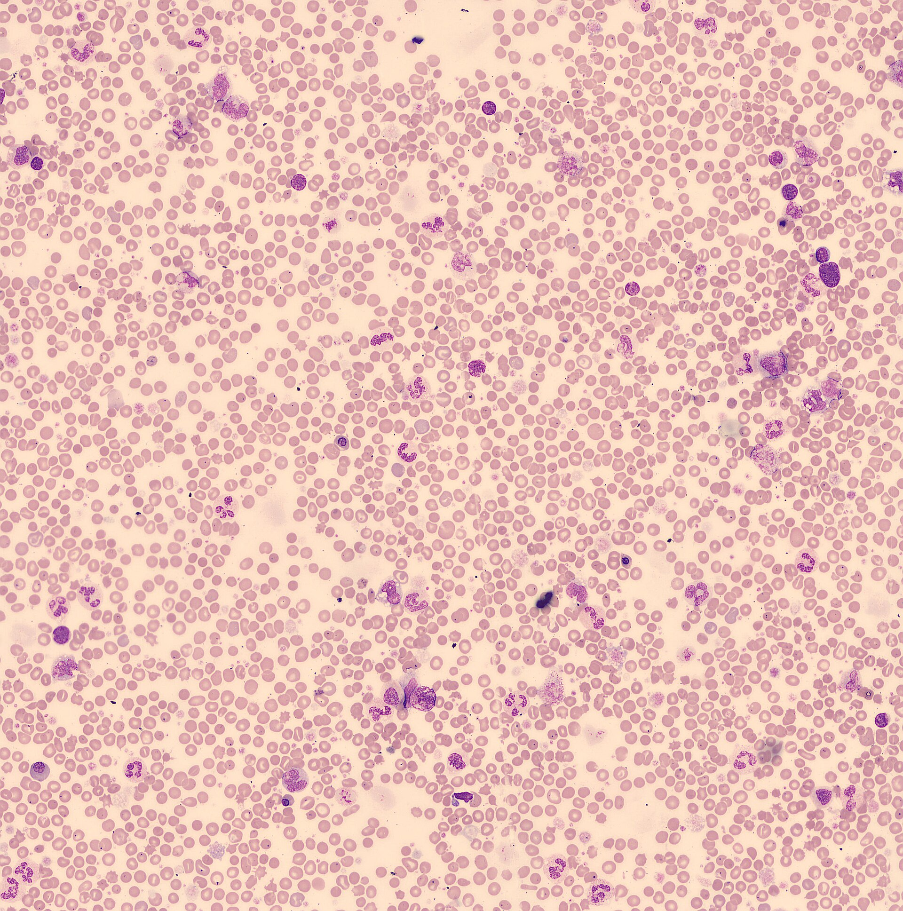

疾病 血液
PMF ｜ 原發性骨髓纖維化 · Primary Myelofibrosis 筆記更新 2026-07-26· 整理狀態：可用
加入閱讀清單 其他名稱 4 PMF · 原發性骨髓纖維化 · 骨髓纖維化 · Primary Myelofibrosis
30 秒行動卡
診斷關鍵 ：巨脾 ＋ 淚滴狀 RBC（dacrocyte）＋ leukoerythroblastosis ＋ 骨髓乾抽（dry tap） → 做骨髓切片 看纖維化分級與巨核異型
治療骨架 ：脾腫／體質症狀用 Ruxolitinib↗ 唯一可能治癒＝Allogeneic HSCT↗
絕對不可 ：骨髓乾抽抽不到就放棄，沒做骨髓切片
定義與定位
項目
重點
本質
克隆性 MPN：巨核細胞異常 → 進行性骨髓纖維化 ＋ 髓外造血
好發族群
中老年
分類位置
慢性 × 髓性 → MPN，Ph 陰性 ；見 Hema Category
三兄弟定位
PV ＝紅血球｜ET ＝血小板｜PMF＝纖維化 ，共用 JAK2／CALR／MPL
續發型
可繼發於 PV ／ET （後 PV／後 ET 骨髓纖維化），處理原則相同
病因與機制
flowchart TD
A["JAK2／CALR／MPL 突變"] --> B["異常巨核細胞增生<br/>釋出纖維化細胞激素"]
B --> C["骨髓被網狀／膠原纖維<br/>取代 → 乾抽"]
B --> D["發炎細胞激素<br/>發燒、盜汗、消瘦"]
C --> E["造血移往脾肝<br/>髓外造血 → 巨脾"]
C --> F["紅血球擠過纖維化骨髓<br/>→ 淚滴狀 RBC"]
E --> G["未成熟粒細胞＋有核 RBC<br/>Leukoerythroblastosis"]
classDef key fill:#263238,stroke:#000,color:#fff,font-weight:bold
class G key
筆記中的流程與關係 一條線推出全部處置
三件套全來自同一件事——骨髓被纖維塞住 ：抽不出來（乾抽）、紅血球擠變形（淚滴）、造血逃到脾肝（巨脾＋不成熟細胞進周邊血）。治療因此分兩路：症狀與脾腫 用 JAK 抑制劑壓下去，纖維化本身只有移植能重來一次 。

PMF 周邊血低倍全景：可見大量大小形狀不一的紅血球，許多呈單端尖出的 teardrop／dacryocyte；同時混入有核紅血球與未成熟髓系細胞，構成 leukoerythroblastic picture。Source: Wikimedia Commons — Primary Myelofibrosis blood stain , El Falaf（CC BY-SA 4.0）。*
臨床表現
典型 ：巨脾 造成左上腹脹痛、早飽；貧血與疲倦提示性 ：體質症狀——發燒、盜汗、體重下降、搔癢、骨痛少見但重要 ：髓外造血腫塊（脊椎旁可致 Spinal cord compression↗ 、腹水／肋膜積液）、門脈高壓、脾梗塞
→ 相關主訴流程：Splenomegaly↗ 、Pancytopenia↗ 、Bone pain↗
診斷
診斷條件
內容
血片三件套
① 淚滴狀紅血球（dacrocyte） ② 白紅血球母細胞反應（leukoerythroblastosis） ③ 貧血＋異形血小板
骨髓
抽吸常乾抽（dry tap） ；必須做切片 ——巨核異型成簇＋網狀／膠原纖維分級
基因
JAK2／CALR／MPL 三選一；三陰性需其他克隆性標記
必要排除
不符合 PV ／ET ／CML ／MDS ；BCR::ABL1 陰性
要開的檢查 ：Peripheral blood smear↗ 、Bone marrow biopsy↗ 、Cytogenetics FISH↗ 、CBC with differential↗
鑑別診斷
要排除的
支持它的線索
怎麼排除
續發性骨髓纖維化 轉移癌（乳癌、攝護腺癌）、結核、自體免疫、放射線
骨髓切片找癌細胞／肉芽腫
CML 也可有脾腫與纖維化
BCR::ABL1 陽性
MDS 伴纖維化明顯 dysplasia、計數↓ 為主
骨髓形態：無 MPN 樣巨核異型成簇
Hairy Cell Leukemia 同樣乾抽＋脾腫＋血球減少
免疫表型、BRAF V600E
治療
情境
處置
無症狀低危
觀察追蹤即可
脾腫／體質症狀
Ruxolitinib↗ 不逆轉纖維化
貧血
輸血支持；EPO 不高者可試 ESA；danazol；早期可用 Interferon alfa↗
中高危且可移植
Allogeneic HSCT↗ ——唯一可能治癒
併發症與預後
要盯的併發症 ：進展為芽細胞期／AML （依 AML 方式治療並評估移植）、Thrombosis↗ （含門脈系統）、門脈高壓與食道靜脈曲張、感染、脾梗塞預後 ：MPN 三兄弟中最差 ；以 DIPSS 等分層（年齡、Hb、WBC、周邊芽細胞、體質症狀、染色體與 ASXL1 等突變）基因 ：CALR 突變者相對較佳；三陰性與高風險突變較差
禁忌與陷阱
絕對不可
情境
絕對不可
為什麼
該做什麼
骨髓抽吸乾抽
報「檢體不足」就結案
乾抽本身就是纖維化的線索 ，沒切片就無法診斷與分級一定要做骨髓切片 ＋網狀纖維染色
長期服用 Ruxolitinib↗
突然停藥
可能出現細胞激素反彈（發燒、脾臟急速回脹、病情急轉直下）
逐步減量 ，必要時短期類固醇覆蓋
巨脾病人
用力深觸診或接觸性運動
脾臟破裂或梗塞出血
輕觸診，避免腹部撞擊
常見錯誤
看到 leukoerythroblastosis 就直接想 PMF——要先排除骨髓轉移癌與感染 。
以為 Ruxolitinib↗ 會逆轉纖維化或治癒——它處理的是脾腫與症狀。
把 PMF 當 MDS ：MDS 是無效造血→計數↓ ，PMF 主軸是纖維化／髓外造血 。
相關連結
SOURCE & CONTEXT
來源與原始筆記 依 [[Hema Category]] 展開；WHO HAEM5（2022）
下載這篇 Markdown ↗ 網站保留原筆記的內容與整理狀態。